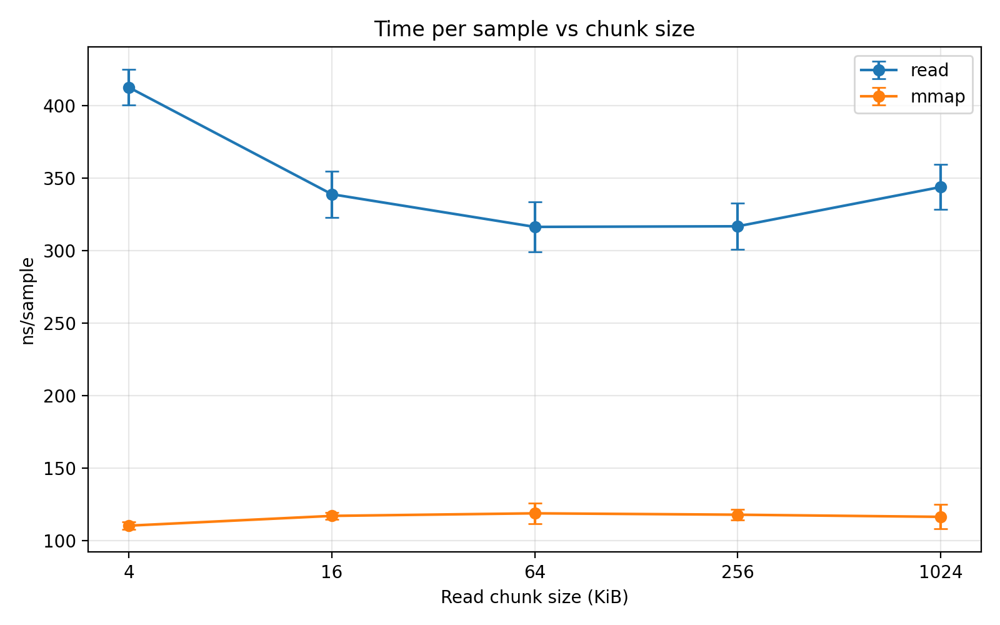
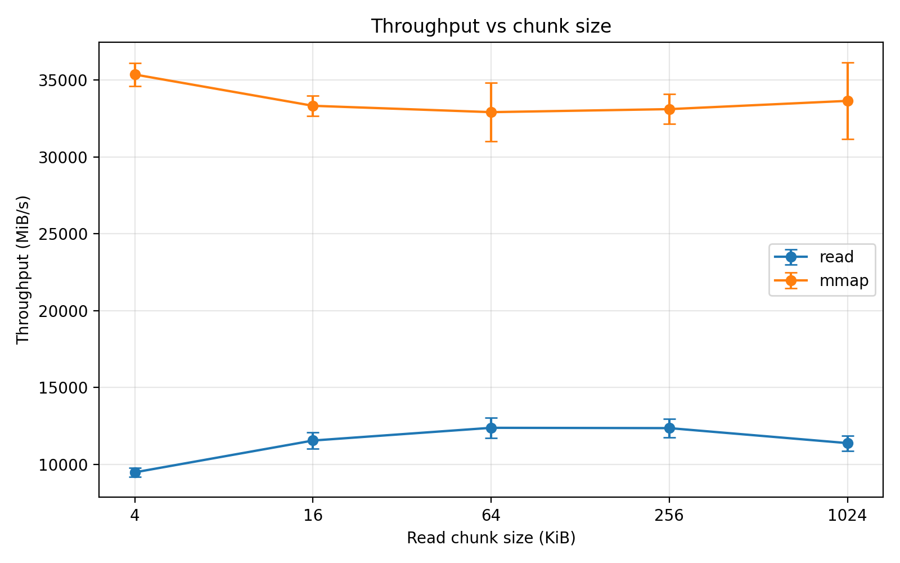
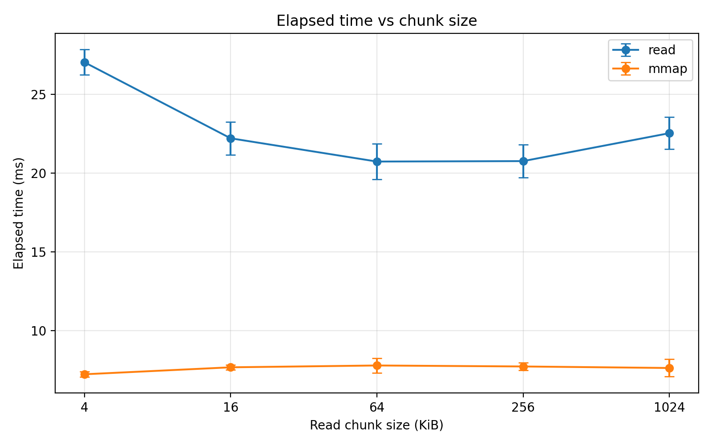

02-mmap-vs-read: What Really Happens at the OS Boundary¶
Modern Unix systems provide two common ways to access file data:
read()— the traditional system call interfacemmap()— memory-mapped file access
At first glance, both ultimately retrieve bytes from the same file. However, they follow very different execution paths through the operating system.
This experiment investigates what happens when we scan a file using these two mechanisms, focusing on the cost of crossing the OS boundary rather than raw disk performance.
The Core Question¶
When reading file-backed data sequentially:
Is it faster to repeatedly call
read()or to map the file withmmap()and access it as memory?
To answer this, we implemented a small benchmark comparing the two access paths.
Two Ways to Access File Data¶
read()¶
read() performs explicit system calls to transfer data from the kernel to a user buffer.
user code
│
├─ read(fd, buf, size)
│
kernel
│
├─ locate page in page cache
├─ copy data → user buffer
│
user scans buffer
Key properties:
- repeated system calls
- kernel → user buffer copy
- explicit buffer management
mmap()¶
mmap() maps file pages directly into the process address space.
user code
│
├─ mmap(file)
│
kernel installs mapping
│
user accesses memory
│
page fault on first touch
│
page cache page mapped
Key properties:
- mapping created once
- data accessed via normal memory loads
- first access may trigger a page fault
Experimental Setup¶
Environment:
- Linux userspace
- x86_64 laptop CPU
- file size: 256 MiB
- sequential scan
- page stride: 4096 bytes
- samples per run: 65536
- iterations: 5
Both access modes touch exactly the same offsets to ensure a fair comparison.
We also sweep different read() buffer sizes:
4 KiB
16 KiB
64 KiB
256 KiB
1024 KiB
Measured metrics:
- elapsed time
- throughput
- time per sample
- page fault counters
Results¶
Time per Sample¶

Observations:
read()improves as buffer size increases- performance stabilizes around 64–256 KiB
mmap()remains almost constant
Approximate values:
| chunk | read(ns/sample) | mmap(ns/sample) |
|---|---|---|
| 4 KB | ~410 | ~110 |
| 16 KB | ~340 | ~116 |
| 64 KB | ~315 | ~118 |
| 256 KB | ~315 | ~118 |
| 1024 KB | ~340 | ~116 |
In this workload:
mmap ≈ 3× faster per sampled access
Throughput¶

Measured throughput:
| chunk | read(MiB/s) | mmap(MiB/s) |
|---|---|---|
| 4 KB | ~9,500 | ~35,000 |
| 64 KB | ~12,000 | ~33,000 |
| 256 KB | ~12,200 | ~33,500 |
Important note:
These numbers do not represent disk bandwidth.
The file was already resident in the page cache, meaning this benchmark primarily measures:
memory bandwidth + kernel overhead
Elapsed Time¶

Total scan time for the 256 MiB file:
| chunk | read(ms) | mmap(ms) |
|---|---|---|
| 4 KB | ~27 ms | ~7 ms |
| 64 KB | ~21 ms | ~7.7 ms |
| 256 KB | ~21 ms | ~7.6 ms |
Overall:
mmap ≈ 2.7× faster
perf Counter Analysis¶
We collected page fault statistics using:
perf stat -e page-faults,minor-faults,major-faults
Results:
page-faults: 24638
minor-faults: 24638
major-faults: 0
Interpretation:
- no major faults occurred
- the file was already cached in memory
- observed faults were minor mapping faults
Therefore the benchmark was not disk-bound.
Instead, it highlights the difference between two kernel execution paths:
read()
syscall
buffer copy
mmap()
page mapping
memory load
Why read() Depends on Chunk Size¶
Small buffers require more system calls.
Example:
4 KiB buffer → ~65536 read syscalls
256 KiB buffer → ~1024 read syscalls
Larger buffers amortize syscall overhead, which explains the improvement between 4 KiB and 64 KiB.
Why mmap() Is Stable¶
After the mapping is created, accesses become simple memory loads:
load instruction
→ page table translation
→ cached memory page
Buffer size has no effect because there is no repeated read call.
Why mmap Looks Faster Here¶
Under warm-cache conditions the two paths behave like this:
read()
syscall
copy to user buffer
scan buffer
mmap()
memory load
occasional minor fault
Avoiding repeated syscalls and explicit buffer copies gives mmap() an advantage.
Limitations¶
This experiment represents one specific workload:
- sequential scan
- page-stride sampling
- warm page cache
Performance may change significantly when:
- the page cache is cold
- access patterns are random
- files are smaller
- the scan touches every byte
For example, when the cache is cold:
mmap() may trigger major page faults
which can drastically change performance.
Takeaway¶
The key lesson is not that one API is universally faster.
Instead, the experiment reveals something deeper:
File access APIs encode different interactions with the operating system.
In this particular workload:
mmap ≈ 2.7× faster than read
because it avoids repeated system calls and explicit kernel-to-user copies.
Understanding these differences helps explain why systems software sometimes prefers memory-mapped I/O — and why it isn't always the right choice.
Source Code¶
Full benchmark source code is available in the repository:
systems-behavior-lab
└── 03-os-boundary
└── 02-mmap-vs-read
Next Experiments¶
Future extensions of this lab:
- cold page cache measurements
- random access patterns
- dense scans (touch every byte)
- measuring major page faults
These variations help reveal how storage, memory, and the OS interact under different workloads.